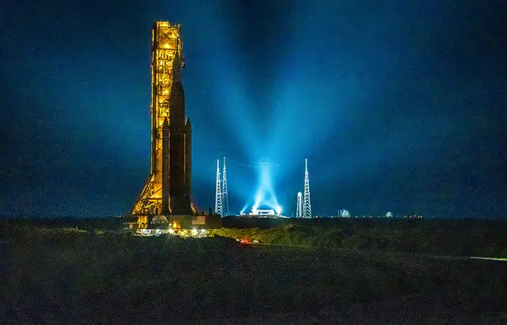

Nasa : La fusée SLS est prête pour son premier décollage vers la Lune

Le retour sur la Lune n’a jamais été aussi proche. La nouvelle fusée géante Space Launch System (SLS) de la Nasa est arrivée ce mercredi matin sur son aire de lancement à Cap Canaveral ( Floride). Son décollage pour notre satellite est prévu dans 12 jours, le 29 août. Cette mission marquera le tout premier vol d’Artémis, le grand programme américain visant à retourner sur la Lune. Artémis 1 se fera sans astronautes à bord, son but étant de tester la fusée et la capsule à son sommet afin de s’assurer qu’elles pourront bien transporter un équipage en toute sécurité, dès 2024.
La fusée SLS est en développement depuis plus d’une décennie et deviendra, quand elle aura décollé, la plus puissante du monde. Elle mesure 98 m de haut. « A nous tous qui levons le nez vers la Lune, en rêvant du jour où l’humanité retournera sur la surface lunaire, avait déclaré début août Bill Nelson, patron de la Nasa. Les amis, nous y sommes, nous y retournons. » La capsule Orion va être propulsée jusqu’à la Lune et même 64.000 km au-delà, s’aventurant plus loin que tout autre vaisseau spatial habitable avant elle. A son retour dans l’atmosphère terrestre, le bouclier thermique devra supporter une vitesse de près de 40.000 km/h et une température à moitié aussi élevée que celle à la surface du Soleil.
Le décollage doit avoir lieu à 14h33 heure française. Si la météo n’est pas adaptée, deux dates de repli (2 et 5 septembre) sont prévues. La mission doit durer 42 jours, jusqu’à un retour dans l’océan Pacifique, où le vaisseau sera récupéré grâce à un bateau de la marine américaine. En 2024, la mission Artémis 2 emportera des astronautes jusqu’en orbite autour de la Lune, sans y atterrir. Cet honneur sera réservé à l’équipage d’Artémis 3, mission prévue au plus tôt en 2025. La dernière fois que des hommes se sont rendus sur la Lune remonte à Apollo 17, en 1972. Ce programme n’avait permis qu’à des hommes blancs de marcher sur la Lune. Artémis enverra, lui, la première femme et la première personne racisée sur notre satellite.
18/08/22 à 10h57